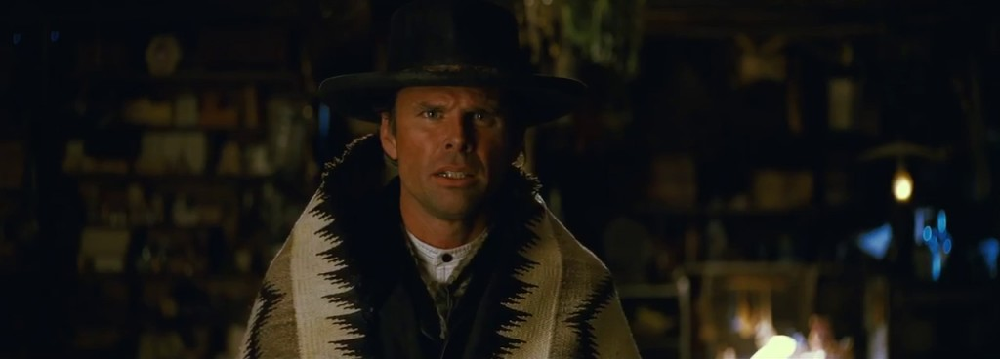
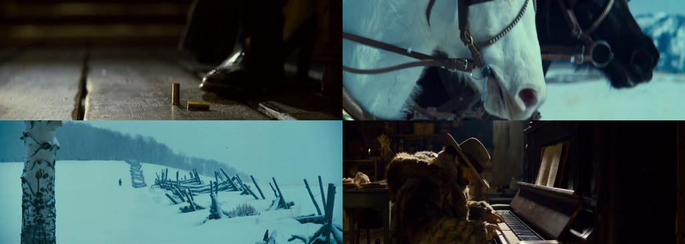
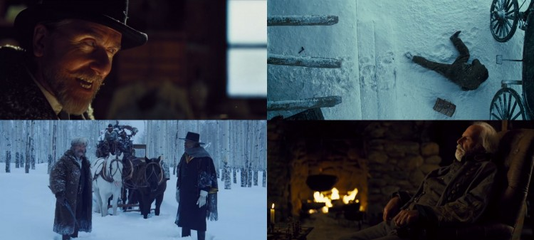

Je n’écris pas les dialogues de mes personnages, je les fais parler entre eux.
— Quentin Tarantino, The Talk, 2013.
Qu’est-ce que c’est qu’un film de Tarantino ? Un Tarantino c’est des dialogues ciselés, un scénario percutant qui transpire le charisme quand il est joué par des comédiens qui eux-mêmes suintent la cool-attitude. Un Tarantino c’est de la surenchère dans les coups qui rappellent les nanars des années 70. Un Tarantino c’est du sang, plein de sang, assez pour repeindre un studio de 20m² plafond compris. Un Tarantino c’est de la musique qu’on n’écoute pas mais qu’on ressent. Un Tarantino c’est de l’art, de l’exploitation qui donne la chair de poule, comme le grincement d’une craie ou d’un ongle sur un tableau noir (rassurez vous c’est un compliment). J’aurais pu dire comme la roulette du dentiste sur une prémolaire, ça restera un compliment, parce qu’un Tarantino ça donne vachement la chair de poule. Donc, imaginez tout ça en un seul film ! Et ce film, c’est The Hateful Eight, Les Huit Salopards en français (référence aux Douze Salopards de Robert Aldrich), son Huitième film, un huis-clos ou devrais-je dire Huit-clos (voilà, ça s’est fait, passons à autre chose.)
Bon, par où commencer ? Je vous annonce la couleur, The Hateful Eight est certes un western, mais ne vous attendez pas à voir un Django Unchained : Origins. Et puis, une critique, de ma part, d’un film de Tarantino, ne peut être que subjective et j’aimerais procéder d’une façon singulière pour parler d’un futur classique du cinéma. Comme chez Wello on aime faire les choses autrement, eh bien on va faire un faux-top huit des raisons qui font des Huit Salopards un film avec un grand f, comme ça ‘‘F’’. Fffffffilm.
La distribution des Huit Salopards est composé d’habitués. On ne va pas tous les citer : Samuel L. Jackson et Tim Roth qui incarnent à eux tous seuls les piliers fondamentaux de la bande Tarantino et sous leurs airs classes permettent aux spectateurs de se plonger dans l’univers de Quentin ; Kurt Russell, badass attachant, le mec qu’il ne faut absolument pas énerver. Il est, en quelque sorte, le déclencheur des ennuis, celui qui poussent le bouchon un peu trop loin, la grande gueule quoi ; Michael Madsen, le revenant. Moins foufou que dans Reservoir Dogs, plus mystérieux et moins bavards, etc. Et Tarantino, comme d’habitude, a rajouté quelques noms à sa clique ; pas Walton Goggins, puisqu’il a déjà joué un rôle assez salopard dans Django Unchained, passé inaperçu malheureusement, mais ici, dans The Hateful Eight, il brille ! Il joue le rôle du Shérif Chris Mannix écrit sur mesure pour lui : un personnage naïf qui bouscule au fur et à mesure des chapitres du côté sombre de la réalité.

Mais ce n’est pas n’importe qui. Walton Goggins, pour le décrire en une seule phrase : C’est le mec qui ose. Les fan-baroudeurs de Sons Of Anarchy savent de quoi je parle. Qu’est-ce que vous voulez que je rajoute de plus ? Bon, ce n’est pas suffisant. Goggins, c’est The Shield et Justified, deux séries remarquables et plusieurs seconds rôles dans des films « sympas », en gros Walton Goggins a de la bouteille.
La nouvelle de l’équipe tarantinesque est Jennifer Jason Leigh. Que dire de cette femme ? C’est le seul personnage du film qui dit peu, elle l’ouvre rarement (je parle de sa bouche, au cas où). Son sourire sournois, coquard à l’œil et sa gestuelle faciale remplacent amplement les mots. Et je me demande ce que les féministes en pensent vu tous les sales coups qu’elle reçoit tout au long du film. Ils lui en ont fait baver, « ils l’ont désenchantée, meskina ! »
Ceux-là, à savoir Goggins et Leigh, ne forment pas de duo, non, mais incarnent, chacun dans son rôle, la fraîcheur du film de genre. Quentin Tarantino a toujours eu le don de ressusciter des comédiens morts dans le game, mais cette fois-ci il a intégré des nouvelles têtes pour moderniser en quelque sorte son casting et mettre sous la lumière des projecteurs des comédiens inattendus, que seul lui sait comment les chopper.
JJ Leigh, on se voit aux Oscars.

Un Tarantino c’est des répliques cultes par-ci et de l’humour noir par-là, The Hateful Eight est un concentré de tout ça. Ça jacasse à mort. J’imagine le nombre de pages du scénario final du film. Ça jacasse, mais ça ne dit pas n’importe quoi. Les dialogues sont percutants, et constituent la quintessence majeure du long-métrage, un peu comme dans un polar.

Quelques longueurs par-ci, par-là, mais la mayonnaise finit toujours par prendre chez Tarantino. Le texte immense du film prend son temps pour construire chaque personnage, dont la psychologie se façonne à ce qu’on finit par adorer les détester. Et en tant qu’amoureux du 7ème art, Tarantino n’hésite pas à faire des clins d’œil aux classiques du cinéma et à ses propres films aussi. (Je ne vous les cite pas. Participez au paratexte du film !)
Mention spéciale au monologue de Samuel L. Jackson qui raconte ce qu’il a fait à quelqu’un sous les airs de Douce nuit, sainte nuit jouée au piano par Demián Bichir… Un monologue qui va vous clouer le bec.
Pour une poignée de dollars, La Bataille d’Alger, L’Oiseau au plumage de cristal, Il était une fois en Amérique… etc., ces films sans la musique d’Ennio Morricone ressembleront à des onomatopées dans le vent. Enfin, pas vraiment, mais quand même.
Quentin Tarantino a toujours utilisé les musiques d’Ennio dans ses films, mais cette fois-ci il a eu sa partition personnalisée, composée sans même qu’Ennio voit le film, pour se distinguer un peu de l’ambiance western dans laquelle il a nagé des années, puisqu’il a beaucoup donné à ce genre grâce à ses collaborations avec Sergio Leone notamment.
La partition du film, composée avec l’Orchestre symphonique national tchèque, se détache du style western et part dans des envolés magistrales et des ambiances angoissantes pour dépoussiérer un genre glorieux, et bon sang de bon Dieu que ça rajoute de l’effet au long-métrage. La partition accompagne la longue ouverture du film et annonce déjà la « badasserie » finale, puis enchante la suite dans un climat inquiétant.
The Hateful Eight est un concentré du savoir-faire tarantinesque, on voit à travers ses comédiens, son amour du 7ème art. Ce film est un hommage à ce dernier et un cadeau pour les cinéphiles avérés.
Les plans contemplatifs de l’ouverture, les gros plans, la direction des comédiens, les plans symétriques, la photographie, le travelling circulaire, la violence esthétique… etc., tout y est pour séduire les vrais fans du style tarantinesque. Tu vas te régaler mon salaud !

« La Mercerie de Minnie », là où se déroule l’action principale du film, devient un décor théâtral pour un huis-clos haletant, puisque cette mercerie invite les protagonistes à l’enfermement. Tout objet de ce chalet, cosy à sa manière, n’est pas là par hasard : la porte à un sens, le ragout aussi, le café surtout. Et puis, filmer cette mercerie où flotte les débris de flocons de neige, où la lumière d’un soleil timide pénètre pour éclairer les visages asséchés par le froid, le tout avec un vieux 70 mm Ultra Panavision, est un orgasme oculaire, alors là le voir ! Un film en 70 mm, c’est une expérience, ça change du numérique, complètement. Une image large, douce, chaleureuse et qui sautille légèrement (oui, c’est de la pellicule.) Les visages, la neige, les parois de la mercerie sont très détaillées, on voit même les flocons (et si on essayait de les toucher ?). La dernière fois qu’on a tourné en 70 mm remonte aux années 1960 quand même, avec le film Khartoum de Basil Dearden. J’imagine le plaisir qu’a pris le réalisateur au tournage quand on voit la précision des plans, le résultat de l’image sur le grand écran.
Voir Les Huit Salopards en 70 mm, c’est comme aller à l’Opéra !
Je risquerai même vous dire que c’est le plus beau Tarantino jusqu’à présent.
Qui est qui ? Qui a fait quoi ? L’intrigue laisse la pression monte et invite chaque personnage à montrer sa vraie personnalité. Les dialogues sont écrits pour faire durer le suspense, puis une voix-off intervient dans les 2 derniers chapitres, quand ta vessie crie : « URINOIR », pour briser le 4ème mur afin de remettre de l’ordre dans ce tas de questions.

Agatha Christie n’a qu’à bien se tenir, parce que The Hateful Eight pourrait facilement faire passer un Hercule Poirot pour un détective minable. On retrouve d’ailleurs chez le personnage qu’incarne Tim Roth un air british à la façon d’Hercule Poirot : même physique, coiffés par un chapeau et moustache qui impose le respect et invite au rire… et à un tea-time au passage.
Je vous entends dire : « Oui, 3 heures, c’est quand même chiant, non ? » Eh bien non, pas du tout, parce que trois heures aux côtés de Samuel L. Jackson, de Kurt Russell ou encore de Channing Tatum, est un régal. Je le répète, les dialogues sont géniaux et t’invitent carrément à participer à l’enquête.
Un western… mais pas tout à fait, puisqu’on a l’habitude de voir des westerns poussiéreux qui se déroulent dans l’ouest américain, dans le Far West, et là Tarantino a troqué le décors chaud et rouge du désert pour l’enfer blanc du Colorado, le Monument Valley pour le Wyoming. Pas de duels-yeux-revolvers, par contre ça tire à mort sur les balgounettes (oui je dis blagounette et alors ?) et les monologues regard à l’horizon qui rappellent l’âge d’or du cinéma western des années 60 et 70.

Le côté sauvage de la partie sud-ouest du Colorado rajoute de la violence au film. Pour réaliser The Hateful Eight, Tarantino s’est inspiré des séries westerns des années 60 (Bonanza, Le Grand Chaparral, Le Virginien). A cette époque-là, plusieurs de ces séries racontent des prises d’otage dans des huis-clos et ça finit toujours en cacahuètes, donc t’inquiète, un western sans coups de feu c’est comme Magnum sans moustache, et The Hateful Eight remplit parfaitement son quota de violence, d’hémoglobine, de tirs, ainsi que d’autres joyeusetés. On est dans un film de Quentin Tarantino après tout, le mec s’est gavé de nanars de série B et de films d’exploitation avant de devenir réalisateur.
The Hateful Eight est un hommage au western. La réalisation est différente des westerns classiques à la Sergio Leone ou à la John Ford par son aspect thriller et polar. Le déroulement des événements rythmés par la musique d’Ennio nous met dans l’ambiance des films d’horreur des années 80, sans le jump scare tout de même. Cette ambiance thriller se fond dans l’enquête et la recherche des indices pour nous offrir à travers les dialogues un moment de films noirs à la Hitchcock.
La neige, l’enfermement, la musique d’Ennio encore une fois et Kurt Russell au passage, est incontestablement un clin d’œil à The Thing de John Carpenter, que le réalisateur cite comme référence principale. The Hateful Eight a aussi un peu d’un Reservoir Dogs. L’expérience huis-clos a déjà été exploité dans ce dernier, on retrouve d’ailleurs des têtes de la bande colorée : Mr Orange, Mr Blonde et Mr Brown en voix-off. Donc le western y est, mais sous une autre forme.
Cette deuxième raison concerne les derniers chapitres du film, mais pas que, et vous l’expliquer serait du spoil et je ne veux pas me faire lyncher en place publique (ou encore être viré). En gros, l’humour, pas souvent drôle, des huit salopards va vous faire réfléchir. Les propos abjectes ou racistes que tiennent certains, blancs qu’ils soient ou noirs, sont proclamés dans le but de témoigner de la haine que les hommes ont à cette époque-là, à savoir l’époque d’après-guerre de Sécession.
On est habitué chez Tarantino à de l’humour noir, mais dans ce film il va encore plus loin. Les blagues tranchantes qui précèdent les silences laissent le spectateur dans l’ambiguïté, puisque les répliques cinglantes et irritantes mettent au premier plan l’envie qu’a le réalisateur de dénoncer, à sa manière bien entendu, certains faits de la société contemporaine sans tomber dans le mélodrame abyssal.
The Hateful Eight est donc un film qui sous ses airs d’arme de distraction, produit de divertissement, vise à sensibiliser ses spectateurs intelligemment.
La raison uno c’est que c’est un Tarantino, et rater un Tarantino est un blasphème dans la religion cinématographique que les apôtres cinéphiles ne pardonnent pas.
Brûle dans l’Enfer Wiseau, blasphémateur !
Ce huitième film semble être la quintessence de l’univers de Quentin Tarantino. Dans The Hateful Eight, il a troqué le postmodernisme pour la linéarité… ou presque : moins déroutant, plus précis, longueurs, dialogues ficelés, et c’est cela qui divise en terme d’avis. Certains le considèrent comme le film le plus abouti du réalisateur, pendant que d’autres parlent de la vanité du style tarantinesque.
 Quentin Tarantino et Robert
Richardson sur le tournage
Quentin Tarantino et Robert
Richardson sur le tournage
des Huit Salopards. Caméra Ultra Panavision 70 mm.
Si vous n’aimez pas, je comprendrai si c’est votre premier Tarantino, quoique je vous encourage à regarder ses classiques. Quant aux fans du Mr. Brown en peignoir rouge, ils vont y trouver leurs comptes.
Je finis par ces mots de Joann Sfar, qui dit :
La réalité, c’est qu’on ne peut pas prendre plaisir à The Hateful Eight, car c’est un film grave, fait pour blesser. Si cette blessure pouvait susciter une réflexion plutôt qu’une moue d’enfant qui n’a pas eu la sucrerie qu’il attendait, ça serait formidable […] Lorsqu’on réfléchit encore à un film près d’une semaine après l’avoir vu, c’est qu’il s’agit d’un grand film.[1]
[1] Cliquez ICI pour lire l’intégralité de la publication de Joann Sfar sur Facebook.